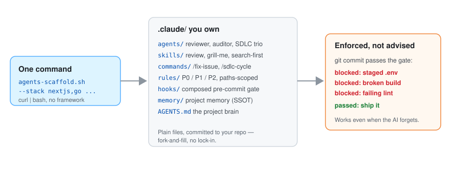

Guardrails for Claude Code · Codex · Antigravity
AI coding agents break your rules. This blocks the commit.
One command installs an AGENTS.md project brain, path-scoped rules, skills, subagents, hooks and a real git pre-commit gate into your repo. No framework, no runtime, no registry — plain files you own.
$ curl -fsSL https://raw.githubusercontent.com/leeyudok/agents-scaffold/main/bin/agents-scaffold.sh | bash -s -- --lang en --stack nextjs --yes
Run it in your repository. Add --dry-run to see what it would write first, or pin and verify the download.
.git/hooks/pre-commit, so it holds for any agent — and for a person at the terminal.- 3 agentsread one
AGENTS.mdnatively - 13 stack presets12 with a build, type or lint gate
- 100+ testsbats regression suite for the installer
- 0 runtimesMIT-licensed plain files in your repo
Demo
One command, then the gate does the arguing
A rule that lives only in a prompt gets ignored eventually. The scaffold turns the rule into a gate that stops the commit, and plants it in the repository.
vhs docs/assets/demo.tape.Why it holds up
Enforcement lives outside the agent
Prompts are requests. These are the parts that do not depend on a model choosing to comply.
Enforced by git, not by prompts
The gate blocks a staged .env and runs the selected stack's build, type or lint check. It is wired in worktrees, submodules and under core.hooksPath.
One source, three agents
Claude Code, Codex and Antigravity read the same AGENTS.md. Skills live once in .agents/skills; Codex and Antigravity adapters are generated from .claude/.
Measured, not assumed
Each harness claim is a recorded measurement against a named CLI version. CI fails when a full-tier measurement is older than 90 days.
Rules load when they apply
A path-scoped rule is loaded only while the agent touches matching files, so context is not spent on conventions for code it is not editing.
Reversible by design
Preview before writing. Updating never overwrites a file you changed — the new version lands beside it as .new. Uninstall removes only untouched files.
Air-gapped and Windows ready
An offline bundle installs with no network. Windows runs through Git Bash with a .cmd launcher, and falls back to a checked copy where symlinks are unavailable.
What lands in your repo
Files you can read, edit and delete
Nothing is hidden in a package. This is an English install with one stack; a Korean install adds 14 Korean-language yd-* expert skills.

AGENTS.md # rules: P0 / P1 / P2 .claude/ rules/ # 5 files + 1 per stack agents/ # 7 subagents commands/ # /fix-issue, /sdlc-cycle hooks/pre-commit.sh # the gate memory/ # project memory settings.json # deny / ask rules, hooks .scaffold.json # your install choices skills -> ../.agents/skills .agents/skills/ # 10 skills .git/hooks/pre-commit # runs the gate
Harness support
Two tiers, stated plainly
baseline is what holds everywhere: the AGENTS.md policy body, including the selected stack's P0 rules, and the git gate. full adds the harness's own layers with every capability measured as passing or partial. Measured 2026-11-04.
| Harness | Tier | Measured as working | Limits |
|---|---|---|---|
| Claude Code 2.1.318 | full | AGENTS.md, path-scoped rules, skills, subagents, the git gate |
Its own hooks fire only when the session commits through its Bash tool — early feedback, not the enforcement line |
| Codex codex-cli 0.166.0 | baseline | AGENTS.md with inlined stack P0, skills, generated subagents and hooks, the git gate |
No file-path-scoped instructions. .codex/ loads only for a trusted project |
| Antigravity agy 1.5.0 | baseline | AGENTS.md with inlined stack P0, skills, generated subagents and hooks, the git gate |
Glob-triggered rules stopped loading on 1.5.0. Hooks run without a trust prompt — read .agents/hooks.json in a repo you did not write |
The source of truth is docs/harness-matrix.json, with the evidence for every verdict. This table is checked against it.
Stack presets
13 stack presets, composed into one gate
Pick any combination with --stack nextjs,python. Each preset adds a rule file scoped to its paths and, where a tool can check it, a step in the pre-commit gate. --list-stacks prints the names; a misspelt one is an error, not a silent skip.
- nextjstsc --noEmit
- bunbunx tsc --noEmit
- pythonruff check, mypy
- gogo build, vet, golangci-lint
- rustcargo check, clippy
- springbootgradlew build
- javawebmaven / gradle / ant compile
- dotnetdotnet build, format, test
- ruby-railsrubocop, rspec
- php-laravelcomposer validate, pint, phpunit
- androidktlintCheck, detekt
- flutterdart format, analyze, test
- opsrules only, no gate step
GitHub or GitLab workflow with --forge. Rules and messages in English (--lang en) or Korean (the default).
After install
Four steps, and the installer prints them too
Paths assume the clone from the quickstart, in agents-scaffold/.
-
Fill in AGENTS.md
Three sections are left empty for you: Project overview, Stack, Commands. Everything else is ready.
-
Prove the gate works
This commit must fail with
Blocked. Then unstage the file.echo X=1 > .env && git add -f .env && git commit -m test git rm --cached -q .env && rm .env
-
Commit what was installed
The hook itself lives in
.git/, so each clone wires it once —--updatedoes that.git add AGENTS.md .claude .agents .gitattributes git commit -m "chore: add agents-scaffold"
-
Update or remove, later
Your choices are recorded in
.claude/.scaffold.jsonand replayed.--dry-runpreviews either.agents-scaffold/bin/agents-scaffold.sh --update . agents-scaffold/bin/agents-scaffold.sh --uninstall . --dry-run
Stuck? The troubleshooting guide covers a blocked commit, an ignored AGENTS.md, .new files, husky and Windows symlinks.
How it compares
Categories, not products
Check any specific tool against the rows. For a small repo with one agent, a hand-written file is the right answer.
| Question | Hand-written CLAUDE.md / AGENTS.md | Rule packs and frameworks inside one vendor's runtime | agents-scaffold |
|---|---|---|---|
| Where a rule is enforced | In the prompt. The model can ignore it | Inside that agent's session. A commit made outside it is not checked | In .git/hooks/pre-commit, outside any agent. It also runs when a person commits |
| Can it be bypassed | Nothing to bypass | Work outside that runtime | Yes — git commit --no-verify. Keep CI as the backstop; the scaffold does not install CI |
| Several agents, one repo | One file per tool, kept in step by hand | Typically one vendor | One AGENTS.md for three; Codex and Antigravity at the baseline tier |
| What you keep upgrading | Nothing | A plugin, package or CLI | Nothing running — but roughly 60 to 190 files committed to your repo |
| Getting new versions | You edit the file | The vendor's update channel | --update; changed files are kept and the new one is written as .new to merge |
| Offline install | It is just a file | Depends on reaching a registry or marketplace | An offline bundle |
Docs
Read it in your language
The README and the reference docs are maintained in four languages. The installed rules come in English or Korean.
Also: security policy, changelog, contributing, and llms.txt for language models. Version 1.0.0 is in preparation; no release has been tagged yet.